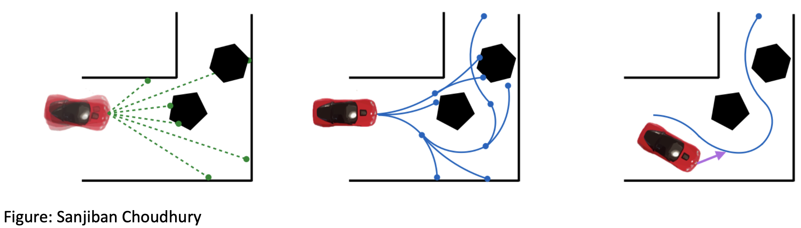
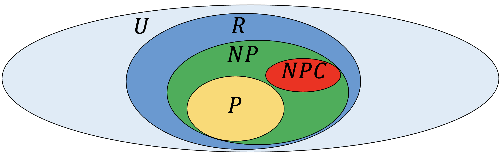
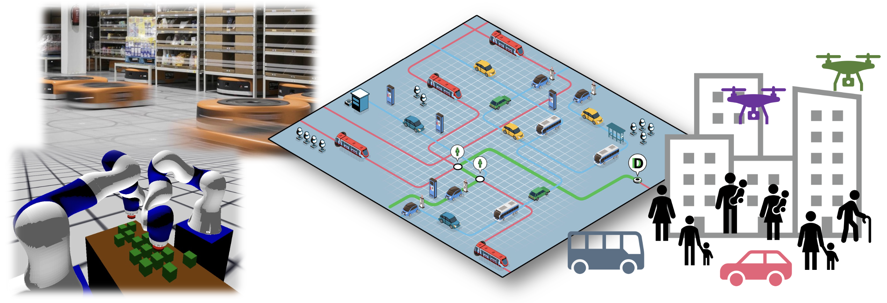

Courses
046213 Mobile Robots (Spring 2023/4)
The course covers fundamental algorithms for the control, planning, and estimation of modern mobile robots in the real world (e.g., self-driving cars and autonomous racing drones). Tutorials and homework assignments will include the Robot Operating System (ROS) and a practical implementation of the studied algorithms for robotic racecars. Moreover, students could partake in an (optional) extra-credit project with physical hardware (F1/10 racecars). Theoretical aspects are emphasized throughout.
Detailed syllabus
- Kinematics and dynamics of wheeled robots and quadrotors.
- Control: PID, pure pursuit, linear quadratic regulators (LQR), iLQR, model-predictive control.
- Planning: A*, probabilistic roadmaps, rapidly-exploring random trees, kinodynmaic methods.
- Perception: Sensors, filters (Bayes, Kalman, EKF and particle), simulateneous localization and mapping.
- Advanced topics: Planning under uncertanity, autonomous driving and racing (tentative).

046002 Design and Analysis of Algorithms (Spring 2023/4)
The course covers advanced algorithms (e.g., dynamic programming, network flow, all-pairs shortest paths, linear programming) and fundamental results in computability and complexity theory (e.g., coloring problems, P vs NP, polynomial reductions, NP-completeness, approximation algorithms).

048214 Advanced Topics in Robotics: Modern Methods and Applications(Spring 2023/4)
This course will be given in a seminar format. Students will be exposed to recent work on autonomous robotic systems, with an emphasis on algorithmic aspects in control, planning, and estimation. Theoretical topics would be considered as well as practical considerations. On the side of theory, we shall review, for instance, learning-based approaches for planning and control, distributed computation among robots, Markovian reasoning, and robotic networks. On the practical side, we will consider, e.g., coordination between multiple robots, autonomous driving, search and rescue, robots in space and underground, and smart mobility. The student presentations would be based on survey papers from the Annual Review of Control, Robotics, and Autonomous Systems and central papers in the studied areas.
Previous courses
046213 Mobile Robots (Spring 2022/3)
048200 Advanced Topics in Robotics: Multi-Robot Systems (Spring 2022/3)
This course was given in a seminar format. We explored recent work on multi-robot systems, emphasizing algorithmic aspects in coordination, planning, and control. Theoretical topics were considered, as well as practical aspects in the context of autonomous driving and racing, smart mobility, drone networks, and warehouse robotics.
Literature covered
- Salomón Wollenstein-Betech, Mauro Salazar, Arian Houshmand, Marco Pavone, Ioannis Ch. Paschalidis, Christos G. Cassandras: Routing and Rebalancing Intermodal Autonomous Mobility-on-Demand Systems in Mixed Traffic. IEEE Trans. Intell. Transp. Syst. 23(8): 12263-12275 (2022)
- Jiaxun Cui, William Macke, Harel Yedidsion, Aastha Goyal, Daniel Urieli, Peter Stone: Scalable Multiagent Driving Policies for Reducing Traffic Congestion. AAMAS 2021: 386-394
- Javier Alonso-Mora, Paul A. Beardsley, Roland Siegwart: Cooperative Collision Avoidance for Nonholonomic Robots. IEEE Trans. Robotics 34(2): 404-420 (2018)
- Mingyu Wang, Zijian Wang, John Talbot, J. Christian Gerdes, Mac Schwager:Game-Theoretic Planning for Self-Driving Cars in Multivehicle Competitive Scenarios. IEEE Trans. Robotics 37(4): 1313-1325 (2021)
- Thakkar, R. S., Samyal, A. S., Fridovich-Keil, D., Xu, Z., & Topcu, U. (2023). Hierarchical Control for Head-to-Head Autonomous Racing. Journal of Field Robotics (under Review).
- Rahul Zahroof, Jiazhen Liu, Lifeng Zhou, Vijay Kumar: Multi-Robot Localization and Target Tracking with Connectivity Maintenance and Collision Avoidance. CoRR abs/2210.03300 (2022)
- Haris Aziz, Hau Chan, Ágnes Cseh, Bo Li, Fahimeh Ramezani, Chenhao Wang: Multi-Robot Task Allocation-Complexity and Approximation. AAMAS 2021: 133-141
- Zhe Chen, Javier Alonso-Mora, Xiaoshan Bai, Daniel Damir Harabor, Peter J. Stuckey:Integrated Task Assignment and Path Planning for Capacitated Multi-Agent Pickup and Delivery. IEEE Robotics Autom. Lett. 6(3): 5816-5823 (2021)
- Choi, C., Adil, M., Rahmani, A., & Madani, R. (2022). Multi-robot motion planning via parabolic relaxation. IEEE Robotics and Automation Letters, 7(3), 6423-6430.
- Gauci M, Chen J, Li W, Dodd TJ & Gross R (2014) Self-organized aggregation without computation. INTERNATIONAL JOURNAL OF ROBOTICS RESEARCH, 33(8), 1145-1161.
- Bray, Edward, and Roderich Groß. "Distributed Optimisation and Deconstruction of Bridges by Self-Assembling Robots." Robotics: Science and Systems, 2022.
- Amouzadi, Mahdi, Mobolaji Olawumi Orisatoki, and Arash M. Dizqah. "Optimal Lane-Free Crossing of CAVs Through Intersections." IEEE Transactions on Vehicular Technology (2022).
- Miculescu, David, and Sertac Karaman. "Polling-systems-based autonomous vehicle coordination in traffic intersections with no traffic signals." IEEE Transactions on Automatic Control 65.2 (2019): 680-694.
- Schiano, Fabrizio, Antonio Franchi, Daniel Zelazo, and Paolo Robuffo Giordano. "A rigidity-based decentralized bearing formation controller for groups of quadrotor UAVs." In 2016 IEEE/RSJ International Conference on Intelligent Robots and Systems (IROS), pp. 5099-5106. IEEE, 2016.
- Li Wang, Aaron D. Ames, Magnus Egerstedt: Safety Barrier Certificates for Collisions-Free Multirobot Systems. IEEE Trans. Robotics 33(3): 661-674 (2017)
- Wurman, Peter R., Samuel Barrett, Kenta Kawamoto, James MacGlashan, Kaushik Subramanian, Thomas J. Walsh, Roberto Capobianco et al. "Outracing champion Gran Turismo drivers with deep reinforcement learning." Nature 602, no. 7896 (2022): 223-228.
- Nayak, Sharan et al. “A Heuristic-Guided Dynamical Multi-Rover Motion Planning Framework for Planetary Surface Missions.” IEEE Robotics and Automation Letters 8 (2023): 2542-2549.
- Anne Theurkauf, Justin Kottinger, Nisar Ahmed, Morteza Lahijanian: Chance-Constrained Multi-Robot Motion Planning under Gaussian Uncertainties. CoRR abs/2303.11476 (2023)
- Federico Rossi, Ramón Iglesias, Mahnoosh Alizadeh, Marco Pavone: On the Interaction Between Autonomous Mobility-on-Demand Systems and the Power Network: Models and Coordination Algorithms. IEEE Trans. Control. Netw. Syst. 7(1): 384-397 (2020)
